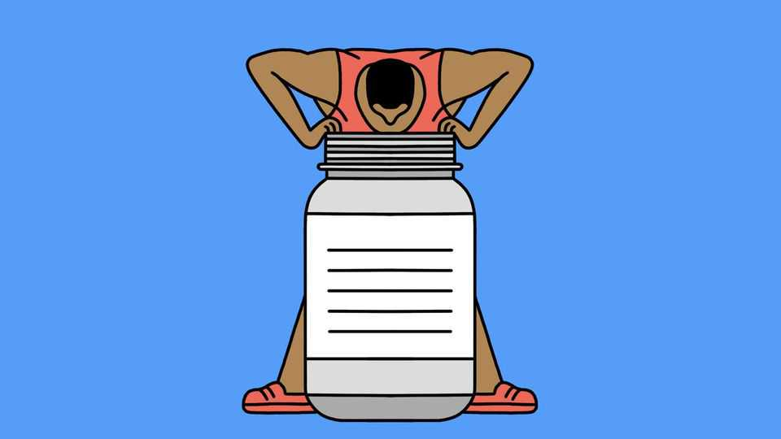

Are some protein powders better than others?
Pure whey is the way to go

Oct 29th 2026
ALCHEMISTS SOUGHT to turn base metals into gold. They failed. But for body builders, Eugene Schiff, a pharmacist from Detroit, managed the next best thing. In 1936 he turned whey, the liquid waste from cheesemaking, into a protein powder. Athletes and gym rats now pay top dollar for the stuff. And whey has been joined by powders made from its fellow dairy product, casein, and from leguminous plants, namely peas and soyabeans. Which is best?
A crucial ingredient to look for is leucine. This is about 12% of whey powder’s mass and one of the 20 amino acids from which proteins are composed. It is one of the nine dubbed “essential”, because humans cannot make them, so they must arrive in food. But leucine has many talents. It also activates a biochemical pathway, called the mechanistic target of rapamycin (mTOR), that encourages protein synthesis.
After exercise, mTOR gets to work replenishing muscle fibres. Leucine thus helps provide not only the signal, but also the raw materials. Put another way, says Stuart Phillips, a kinesiologist at McMaster University, leucine is both brick and bricklayer. In younger, active adults, leucine’s muscle-building might goes only so far, says Brad Schoenfeld of Lehman College in New York: there is no additional benefit to taking more than that found in a standard 25g scoop of whey powder. Older people’s muscles are tougher to stimulate. For them, whey with extra leucine can be beneficial for building brawn, according to a study of 20 people in Nutrition Journal in 2014.
The other amino acids are important too. Writing in the Journal of Physiology, in 2012, Dr Phillips and his colleagues gave three groups of young men different combinations of whey, leucine and other amino acids immediately after a leg workout. Some took full whey, for example, whereas others had a quarter dose topped up with extra leucine. The researchers then took samples one, three and five hours later from the quadriceps above each participant’s knee. While leucine triggered the muscles’ response across the board, those who had received a full dose of whey enjoyed the most prolonged period of muscle synthesis.
How does whey compare to rival protein powders? Casein, the protein of the solid curds from which whey is separated during cheesemaking, is less leucine-heavy; it makes up 8% of the powder’s mass. That means it will not be as effective immediately after a workout, but it does contain a good balance of other essential amino acids. Pea and soya powders, in contrast, have less protein per serving overall.
Whey itself comes in refined varieties. There are isolates with less lactose for those wanting to avoid calories, and hydrolysates pre-digested with enzymes to make the powder easier on the gut. Such concoctions are often touted as offering greater benefits owing to their more refined nature. But a study published in Nutrition & Metabolism in 2021 found little evidence they boost muscle synthesis any more than pure whey. For gym buffs looking for a quick recovery after a workout, then, a full dose of unadulterated whey is the best bet.
A few ingredients are best avoided. Some powders are leavened with glycine and taurine, amino acids that can be synthesised cheaply. These inflate a product’s amino-acid count while doing little to stimulate muscle growth. Some makers bulk up their products with starches, gums and emulsifiers too. Buyers should remember: not all that glitters is muscle-building gold. ■
After a free, evidence-based guide to health and wellness? Sign up to our weekly Well Informed newsletter.